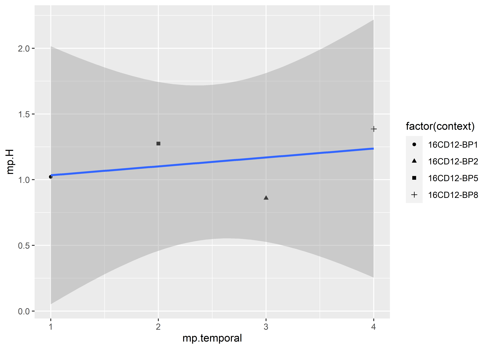
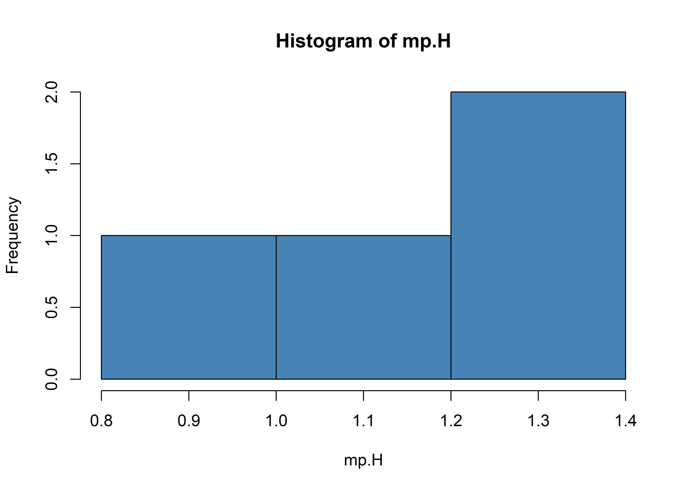
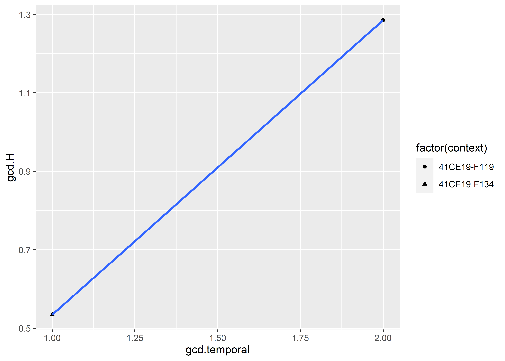
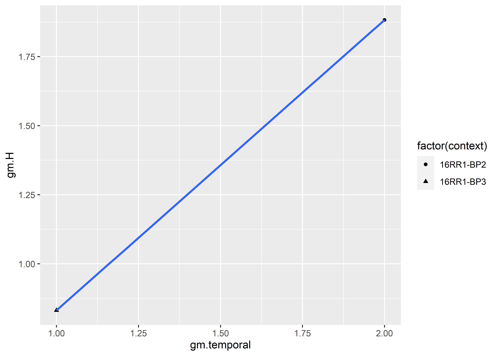
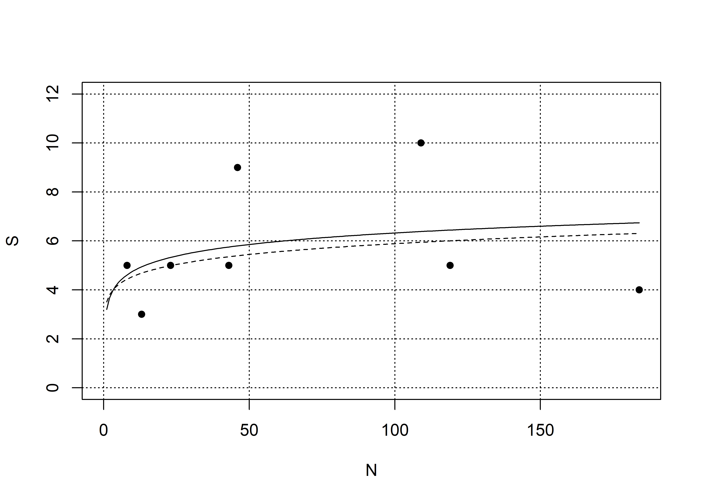

Chapter 3 Composition & Diversity
This analysis of assemblage diversity is limited to Caddo mortuary contexts at the Mounds Plantation, George C. Davis, and Gahagan Mound sites where Gahagan bifaces were recovered.
3.1 Taxonomic composition
library(here)
library(dplyr)
# read data
data <- read.csv("gahagan-diagnostics.csv")
# table of diagnostics
knitr::kable(data)| context | region | alba | celt | catahoula | friley | gahagan | hayes | harrell | reed | scallorn | coles_creek | hickory_engraved | holly_fine_engraved | kiam_incised |
|---|---|---|---|---|---|---|---|---|---|---|---|---|---|---|
| 41CE19-F134 | South | 157 | 10 | 0 | 0 | 16 | 1 | 0 | 0 | 0 | 0 | 0 | 0 | 0 |
| 41CE19-F119 | South | 5 | 3 | 0 | 0 | 12 | 1 | 0 | 0 | 0 | 0 | 0 | 2 | 0 |
| 16RR1-BP2 | South | 31 | 14 | 0 | 0 | 16 | 8 | 2 | 16 | 19 | 0 | 1 | 1 | 1 |
| 16RR1-BP3 | South | 89 | 3 | 0 | 0 | 15 | 0 | 0 | 0 | 11 | 0 | 0 | 1 | 0 |
| 16CD12-BP1 | North | 35 | 1 | 2 | 1 | 1 | 3 | 0 | 0 | 0 | 1 | 1 | 1 | 0 |
| 16CD12-BP2 | North | 1 | 0 | 0 | 0 | 8 | 4 | 0 | 0 | 0 | 0 | 0 | 0 | 0 |
| 16CD12-BP5 | North | 12 | 0 | 0 | 1 | 2 | 9 | 0 | 0 | 19 | 0 | 0 | 0 | 0 |
| 16CD12-BP8 | North | 0 | 0 | 4 | 0 | 1 | 0 | 0 | 0 | 1 | 0 | 1 | 1 | 0 |
3.2 Alpha diversity
library(vegan)## Loading required package: permute##
## Attaching package: 'permute'## The following object is masked from 'package:seriation':
##
## permute## This is vegan 2.5-7# assemblage size (N)
N <- rowSums(data[3:15])
N ## assemblage sizes range from:## [1] 184 23 109 119 46 13 43 8# how many of each type were found?
T <- colSums(data[3:15])
T## alba celt catahoula friley
## 330 31 6 2
## gahagan hayes harrell reed
## 71 26 2 16
## scallorn coles_creek hickory_engraved holly_fine_engraved
## 50 1 3 6
## kiam_incised
## 1## richness (S) = number of types in assemblage
S <- specnumber(data[3:15])
S## [1] 4 5 10 5 9 3 5 5## ubiquity (U) = number of assemblages that contain a particular type
U <- specnumber(data[3:15])
U## [1] 4 5 10 5 9 3 5 53.3 Relative abundance
# mean number of observations for each type
colMeans(data[3:15])## alba celt catahoula friley
## 41.250 3.875 0.750 0.250
## gahagan hayes harrell reed
## 8.875 3.250 0.250 2.000
## scallorn coles_creek hickory_engraved holly_fine_engraved
## 6.250 0.125 0.375 0.750
## kiam_incised
## 0.125# data by percentage
data.pct <- data[3:15]/N*100
## mean percent (Mp) of each type across assemblage
Mp <- colMeans(data.pct)
Mp## alba celt catahoula friley
## 40.2477177 4.5021524 6.7934783 0.5624368
## gahagan hayes harrell reed
## 21.1271305 8.8064945 0.2293578 1.8348624
## scallorn coles_creek hickory_engraved holly_fine_engraved
## 10.4201171 0.2717391 1.9489180 3.1409166
## kiam_incised
## 0.1146789## percentage of sites that have each type
Up <- U/length(N)*100
Up## [1] 50.0 62.5 125.0 62.5 112.5 37.5 62.5 62.53.3.1 Relative abundance by context
library(dplyr)
library(ggplot2)
library(wesanderson)
pal <- wes_palette("Moonrise2", 13, type = "continuous")
gahagan_ct <- data[, -(1:2)]
labels <- paste0(data$context, " (", substr(data$region, 1, 1), ")")
rownames(gahagan_ct) <- labels
artifacts_long <- data.frame(context = rownames(gahagan_ct),
stack(as.data.frame(gahagan_ct)))
artifacts <- rename(artifacts_long, Types = ind)
# configure plot
plot1 <- artifacts %>%
arrange(context) %>%
mutate(context = factor(context, levels = c(
"16CD12-BP1 (N)", "41CE19-F134 (S)", "16RR1-BP3 (S)",
"16CD12-BP5 (N)", "16RR1-BP2 (S)", "41CE19-F119 (S)",
"16CD12-BP2 (N)", "16CD12-BP8 (N)"))) %>%
ggplot( aes(x=context, y = values, fill = Types)) +
geom_bar(stat="identity", position = "fill") +
coord_flip() +
scale_fill_manual(values = pal) +
labs(x = "Context",
y = "Relative abundance (%)",
title = "Abundance of diagnostic types across Gahagan-bearing contexts")
## print
plot1
(#fig:plot.alpha.diversity)Contexts ordered temporally from bottom to top based upon seriation results provided in the previous chapter. The middle two contexts (16RR1-BP2 and 16CD12-BP5) are interchangeable.
3.4 Diversity indices
# Shannon diversity
## high diversity = more types and spread more evenly over types
data$H <- diversity(data[3:15])
H <- data$H3.5 Intra-site diversity
3.5.1 Beta diversity - Mounds Plantation
# filter dataset by mp context
# mutate to add temporal assignment per seriation
mp <- data %>%
filter(context == c("16CD12-BP1", "16CD12-BP2",
"16CD12-BP5", "16CD12-BP8")) %>%
mutate(temporal = c(1, 3, 2, 4), .after = region)
pal2 <- wes_palette("Moonrise2", 4, type = "continuous")
# table of diagnostics
knitr::kable(mp, "pipe")| context | region | temporal | alba | celt | catahoula | friley | gahagan | hayes | harrell | reed | scallorn | coles_creek | hickory_engraved | holly_fine_engraved | kiam_incised | H |
|---|---|---|---|---|---|---|---|---|---|---|---|---|---|---|---|---|
| 16CD12-BP1 | North | 1 | 35 | 1 | 2 | 1 | 1 | 3 | 0 | 0 | 0 | 1 | 1 | 1 | 0 | 1.0216998 |
| 16CD12-BP2 | North | 3 | 1 | 0 | 0 | 0 | 8 | 4 | 0 | 0 | 0 | 0 | 0 | 0 | 0 | 0.8587409 |
| 16CD12-BP5 | North | 2 | 12 | 0 | 0 | 1 | 2 | 9 | 0 | 0 | 19 | 0 | 0 | 0 | 0 | 1.2745830 |
| 16CD12-BP8 | North | 4 | 0 | 0 | 4 | 0 | 1 | 0 | 0 | 0 | 1 | 0 | 1 | 1 | 0 | 1.3862944 |
mp.H <- mp$H
mp.temporal <- mp$temporal
## plot
ggplot(mp, aes(x = mp.temporal, y = mp.H)) +
geom_point(aes(shape = factor(context))) +
geom_smooth(method = "lm")## `geom_smooth()` using formula 'y ~ x'
# load
library(RRPP)
# are data normally distributed?
shapiro.test(mp.H)##
## Shapiro-Wilk normality test
##
## data: mp.H
## W = 0.95308, p-value = 0.7354hist(mp.H, col='steelblue')
# ANOVA: differences in assemblage diversity among the contexts?
mp.context <- mp$context
# MODEL: H as a function of context
mp.shannon <- lm.rrpp(mp.H ~ mp.context,
data = mp,
print.progress = FALSE,
iter = 9999)
# ANOVA: do contexts differ by H?
anova(mp.shannon)##
## Analysis of Variance, using Residual Randomization
## Permutation procedure: Randomization of null model residuals
## Number of permutations: 10000
## Estimation method: Ordinary Least Squares
## Sums of Squares and Cross-products: Type I
## Effect sizes (Z) based on F distributions
##
## Df SS MS Rsq F Z Pr(>F)
## mp.context 3 0.17179 0 1 0 NaN 0.8145
## Residuals 0 0.00000 -Inf 0
## Total 3 0.17179
##
## Call: lm.rrpp(f1 = mp.H ~ mp.context, iter = 9999, data = mp, print.progress = FALSE)3.5.2 Beta diversity - George C. Davis
# filter dataset by mp context
# mutate to add temporal assignment per seriation
gcd <- data %>%
filter(context == c("41CE19-F134", "41CE19-F119")) %>%
mutate(temporal = c(1, 2), .after = region)
# table of diagnostics
knitr::kable(gcd, "pipe")| context | region | temporal | alba | celt | catahoula | friley | gahagan | hayes | harrell | reed | scallorn | coles_creek | hickory_engraved | holly_fine_engraved | kiam_incised | H |
|---|---|---|---|---|---|---|---|---|---|---|---|---|---|---|---|---|
| 41CE19-F134 | South | 1 | 157 | 10 | 0 | 0 | 16 | 1 | 0 | 0 | 0 | 0 | 0 | 0 | 0 | 0.5344039 |
| 41CE19-F119 | South | 2 | 5 | 3 | 0 | 0 | 12 | 1 | 0 | 0 | 0 | 0 | 0 | 2 | 0 | 1.2855725 |
gcd.H <- gcd$H
gcd.temporal <- gcd$temporal
## plot
ggplot(gcd, aes(x = gcd.temporal, y = gcd.H)) +
geom_point(aes(shape = factor(context))) +
geom_smooth(method = "lm")## `geom_smooth()` using formula 'y ~ x'
# load
library(RRPP)
# ANOVA: differences in assemblage diversity among the contexts?
gcd.context <- gcd$context
# MODEL: H as a function of context
gcd.shannon <- lm.rrpp(gcd.H ~ gcd.context,
data = gcd,
print.progress = FALSE,
iter = 9999)
# ANOVA: do contexts differ by H?
anova(gcd.shannon)##
## Analysis of Variance, using Residual Randomization
## Permutation procedure: Randomization of null model residuals
## Number of permutations: 10000
## Estimation method: Ordinary Least Squares
## Sums of Squares and Cross-products: Type I
## Effect sizes (Z) based on F distributions
##
## Df SS MS Rsq F Z Pr(>F)
## gcd.context 1 0.28213 0 1 0 0 0.5
## Residuals 0 0.00000 Inf 0
## Total 1 0.28213
##
## Call: lm.rrpp(f1 = gcd.H ~ gcd.context, iter = 9999, data = gcd, print.progress = FALSE)3.5.3 Beta diversity - Gahagan Mound
# filter dataset by mp context
# mutate to add temporal assignment per seriation
gm <- data %>%
filter(context == c("16RR1-BP2", "16RR1-BP3")) %>%
mutate(temporal = c(2, 1), .after = region)
# table of diagnostics
knitr::kable(gm, "pipe")| context | region | temporal | alba | celt | catahoula | friley | gahagan | hayes | harrell | reed | scallorn | coles_creek | hickory_engraved | holly_fine_engraved | kiam_incised | H |
|---|---|---|---|---|---|---|---|---|---|---|---|---|---|---|---|---|
| 16RR1-BP2 | South | 2 | 31 | 14 | 0 | 0 | 16 | 8 | 2 | 16 | 19 | 0 | 1 | 1 | 1 | 1.883188 |
| 16RR1-BP3 | South | 1 | 89 | 3 | 0 | 0 | 15 | 0 | 0 | 0 | 11 | 0 | 0 | 1 | 0 | 0.831375 |
gm.H <- gm$H
gm.temporal <- gm$temporal
## plot
ggplot(gm, aes(x = gm.temporal, y = gm.H)) +
geom_point(aes(shape = factor(context))) +
geom_smooth(method = "lm")## `geom_smooth()` using formula 'y ~ x'
# load
library(RRPP)
# ANOVA: differences in assemblage diversity among the contexts?
gm.context <- gm$context
# MODEL: H as a function of context
gm.shannon <- lm.rrpp(gm.H ~ gm.context,
data = gm,
print.progress = FALSE,
iter = 9999)
# ANOVA: do contexts differ by H?
anova(gm.shannon)##
## Analysis of Variance, using Residual Randomization
## Permutation procedure: Randomization of null model residuals
## Number of permutations: 10000
## Estimation method: Ordinary Least Squares
## Sums of Squares and Cross-products: Type I
## Effect sizes (Z) based on F distributions
##
## Df SS MS Rsq F Z Pr(>F)
## gm.context 1 0.55316 1 1 0 0 0.5
## Residuals 0 0.00000 Inf 0
## Total 1 0.55316
##
## Call: lm.rrpp(f1 = gm.H ~ gm.context, iter = 9999, data = gm, print.progress = FALSE)3.6 Gamma diversity - Southern Behavioural Region Sites
3.7 Gamma diversity - Combined
3.8 Evenness
# evenness
## Pielou's J (Shannon diversity index divided by natural log of richness)
J <- H/log(S)
J## [1] 0.3854909 0.7987711 0.8178582 0.5165623 0.4649956 0.7816597 0.7919429 0.86135313.9 Beta diversity
data2 <- data[3:15]
types.jaccard <- vegdist(data2, method = "jaccard")
plot(
hclust(types.jaccard),
hang = -1,
main = "Assemblages clustered by Jaccard similarity",
axes = FALSE, ylab = ""
)
(#fig:diversity1.1, )Caddo burial assemblages that include Gahagan bifaces; 1, 41CE19-F134; 2, 41CE19-F119; 3, 16RR1-BP2; 4, 16RR1-BP3; 5, 16CD12-BP1; 6, 16CD12-BP2; 7, 16CD12-BP5; 8, 16CD12-BP8.
# summarize assemblage diversity to identify high & low diversity assemblages
library(maptools)
pch <- c(1, 3)[as.factor(data$region)]
plot(H, J,
pch = pch)
abline(h = median(J),
v = median(H),
lty = 2)
pointLabel(H, J,
rownames(data),
cex = .75)
leg.txt <- c(as.expression(bquote("Northern Behavioral Region")),
as.expression(bquote("Southern Behavioral Region")))
legend("bottomright",
leg.txt,
pch = c(1, 3))Figure 3.1: Caddo burial assemblages that include Gahagan bifaces; 1, 41CE19-F134; 2, 41CE19-F119; 3, 16RR1-BP2; 4, 16RR1-BP3; 5, 16CD12-BP1; 6, 16CD12-BP2; 7, 16CD12-BP5; 8, 16CD12-BP8. The three sites in the lower part of the left quadrat exhibit lower diversity and evenness, and each represents the earliest context at each site to include a Gahagan biface. Those sites in the upper right quadrat have higher diversity and evenness, and occur later than those in the lower left quadrat.
# sample size and richness
plot(S~N,
ylim = c(0, 12),
xlim = c(0, 184),
pch = 16)
abline(h = seq(0, 12, by = 2),
v = seq(0, 184, by = 50),
col = "black",
lty = 3)
# logarithmic function
data.log <- lm(S~log(N))
summary(data.log)##
## Call:
## lm(formula = S ~ log(N))
##
## Residuals:
## Min 1Q Median 3Q Max
## -2.7397 -1.5681 -0.5406 1.0918 3.6157
##
## Coefficients:
## Estimate Std. Error t value Pr(>|t|)
## (Intercept) 3.1998 3.3102 0.967 0.371
## log(N) 0.6788 0.8491 0.799 0.455
##
## Residual standard error: 2.5 on 6 degrees of freedom
## Multiple R-squared: 0.09626, Adjusted R-squared: -0.05436
## F-statistic: 0.6391 on 1 and 6 DF, p-value: 0.4545deviance(data.log)## [1] 37.5052xval <- seq(1, 184, by = 1)
lines(xval,
predict(data.log,
data.frame(N = xval)),
lty = 1)
# power function
data.pow <- lm(log(S)~log(N))
summary(data.pow)##
## Call:
## lm(formula = log(S) ~ log(N))
##
## Residuals:
## Min 1Q Median 3Q Max
## -0.45522 -0.24870 -0.03373 0.21781 0.51986
##
## Coefficients:
## Estimate Std. Error t value Pr(>|t|)
## (Intercept) 1.2560 0.5378 2.335 0.0582 .
## log(N) 0.1123 0.1380 0.814 0.4468
## ---
## Signif. codes: 0 '***' 0.001 '**' 0.01 '*' 0.05 '.' 0.1 ' ' 1
##
## Residual standard error: 0.4062 on 6 degrees of freedom
## Multiple R-squared: 0.09942, Adjusted R-squared: -0.05068
## F-statistic: 0.6624 on 1 and 6 DF, p-value: 0.4468sum((S-exp(fitted(data.pow)))^2)## [1] 39.02295lines(xval,
exp(predict(data.pow,
data.frame(N = xval))),
lty = 2)
# rarefaction curve
## how do individual assemblages compare to the composite?
xval <- seq(2, 200, by = 2)
data.rar <- rarefy(T, xval, se = TRUE)
Est <- data.rar[1, ]
Sd <- data.rar[2, ]
rare <- cbind(lower = Est-2*Sd,
expected = Est,
upper = Est+2*Sd)
plot(S~N,
ylim = range(rare),
xlim = range(xval),
pch = 16)
matlines(xval, rare,
type = "l",
lty = c(2, 1, 2),
col = "black")Figure 3.2: Rarefaction curve and confidence limits (dashed lines) for comparison of individual assemblages to the composite. Results demonstrate that diversity in the mortuary assemblages from 41CE19-F119 and 16RR1-BP3 are lower than expected based on the rarefaction curve.